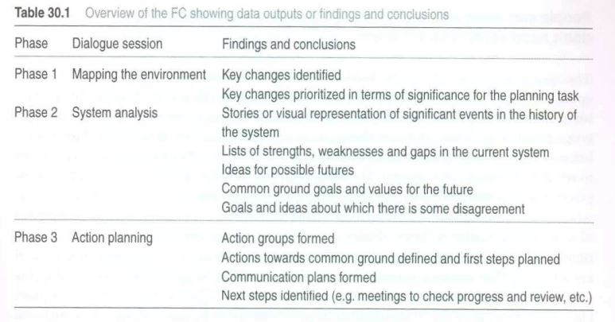
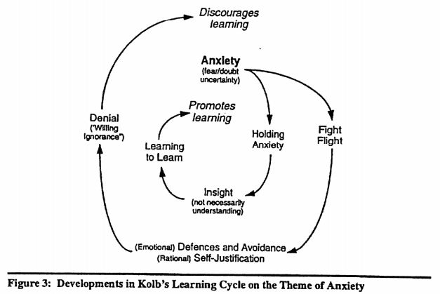
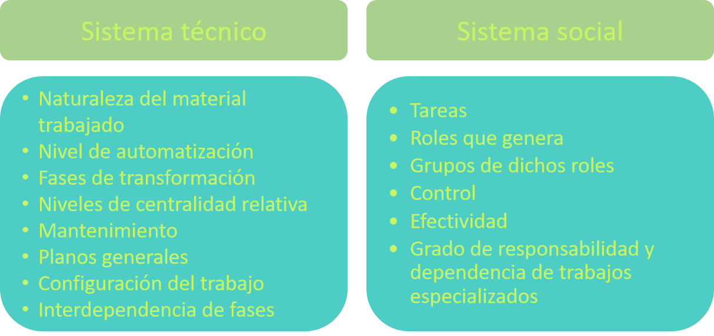

The future conference es un método para permitir grupos diversos generar propuestas o un plan basado en su futuro común donde todos los stakeholders sean representados. The future conference o La Conferencia Futura fue primeramente vista en el año 1960 por Emery y Eric Trist, siendo Fran Ryan la que compiló y analizó dicho método en el año 2004.
La cantidad de participantes son pocos para un buen diálogo y suficientemente diverso, es decir, hasta 70 personas. Si faltan las personas clave, se puede perder información y el éxito es menos probable. Una vez reunidos, se les explica por qué se reúnen, lo que pasará en la reunión con su duración y los resultados esperados, los cuales pueden ser una lista de propuestas y últimamente un plan de implementación o una estructura de gobernanza.
La mecánica general es tener sesiones de conversación en grupos grandes y otros en pequeños. Durante los pequeños se crea la "investigación", y durante la grande se expone dichos resultados. La primera parte se habla del contexto, la segunda sobre el sistema a trabajar tanto en su pasado, presente y deseable futuro, mientras que la tercera parte trata de cómo lograr dicho deseado futuro, es decir, crear un plan de acción.
Hay que destacar que la investigación es para la propuesta/plan de acción, no investigar por investigar. Además, no se necesitan expertos certificados, ya que la gente involucrada tiene el conocimiento suficiente. También estos procesos funcionan mejor de manera democrática, el rol del Organizador es el de asegurarse que todos entienden y manejar el proceso, lo que le puede causar incomodidad por perder el control. Lo anterior debido a que cada participantes es una pieza irremplazable del rompecabezas.
Hay que rescatar el concepto de sistemas abiertos, es decir, que pueden aprender del ambiente cambiente; un diálogo necesita ser capaz de recibir comentarios, sentirse dentro del grupo y compartir miedos/esperanzas; y finalmente enfocarse en lo positivo del cambio en vez de lo negativo.
Lo bueno de esto es que es pragmático y genera planes de acción que sean efectivamente acogidos. También se dice que es un proceso más rápido y apropiado. Lo malo es que no hay mucha evidencia que prueba estas bondades. Además, el costo económico y temporal, que puede hasta ser 3 días intensos, incluyendo que no necesariamente va a haber motivación por los asistentes.
Prácticamente se basa en que con la experiencia se aprende más que solo leyendo papers sobre un tema. Elaborado por Eduardo Acuña en el año 2013, es un trabajo que muestra las conclusiones socianalíticas en el campo del trabajo y aprendizaje en grupos, a partir de clases de FEN, específicamente GDP2.
Se debe evitar la autoridad para estos procesos. También, se requiere coraje y madurez para soportar ideas divergentes pero legítimas que generan ansiedad. Dicha ansiedad se puede responder con un estado mental esquizoparanoide o depresivo. El primero lleva a autodefensas de escisión, racionalización, idealización y proyección, mientras que el segundo, es trascendente para el aprendizaje por tolerar ambivalencias y contradicciones.
También existe un tipo de ansiedad grupal, la cual se responde con grupos de trabajo o con supuestos básicos. El primero logra trabajar racionalmente y de manera eficiente, mientras que los otros impiden la evolución del grupo. Estos supuestos básicos son los de dependencia a una idea mágica, lucha-fuga a un enemigo externo y apareamiento donde sale un líder salvador Mesiánico.
Russ Vince mejora el ciclo de aprendizaje de Kolb en su artículo Behind and Beyond Kolb's Leaning Cicle del año 1998. Kolb habla de que el aprendizaje es el proceso donde el conocimiento es creado por la transformación de la experiencia. Se puede ver que es:
Cabe destacar que experiencias como hostigamiento, tortura o agresión es mejor aprenderlas de otros. Esto es viable, ya que el punto es ocupar una experiencia pasada para generar el conocimiento. También, que el aprendizaje no es simple, requiere pasar por una experiencia nueva que genera ansiedad porque puede destrozar lo que creíamos correcto, la cual debe ser considerada y tratada, lo que forma un nuevo tipo de ciclo.
Vince habla de que hay que enfocarse en el aquí y ahora en vez del pasado para lidiar mejor con la ansiedad. También, ya como las experiencias están bajo una situación social con asimetrías de poder, el aprendizaje es diferente entre personas, por lo que el foco debiera ser dialogar más que discutir/debatir. Además, nos podemos preguntar por qué la predisposición a aprender de cierta manera.
Es ideal que haya preocupación por las emociones, ya que la ansiedad se expresa con ellas, por lo que hay que tener una fuerte empatía con el resto, y sobre todo uno mismo. También que las asimetrías de poder se asuman desde el principio. Por último, lidiar con las experiencias dentro de un contexto social, junto con su respectiva interpretación.
Action Research, o Investigación Acción, es el término que Susan Long plantea en el año 2004 para reducir la distancia entre investigador e investigado para que estos tengan mayor disposición inconsciente a trabajar con el otro. Esto con el fin de reducir ansiedad, ambigüedad y otros malestares psicológicos y sociales.
Susan también habla de que una organización se le debe analizar en sus aspectos inconscientes y dinámicos. Esto incluye el cambio de la organización tiene cuando se siente observado con el investigador. De hecho, hay que también registrar las reacciones que tienen los participantes durante la investigación.
Los elementos son los miembros de un sistema particular, un proceso de investigación colaborativo con los demás en equipo y sobre un aspecto de su propio sistema. Se asume que tienen conocimiento del sistema, dónde sacar información y poder ocupar la investigación de alguna manera. Este método es con planeación, observación, acción, reflexión y evaluación. También, se asume colaboración, iteración y compromiso con el proceso. El punto más importante es que el aprendizaje se logra mejor con experiencias reales donde se debe identificar el problema y generar una solución.
William Pasmore en el año 2001 habla de la perspectiva socio-técnica del Action Research. Primero confirma la validez del Action Research de manera general. Por ejemplo, muestra que, de los tres tipos de liderazgos, es decir, el autocrático, laissez-faire y democrático, sólo el democrático termina sin frustración ni conflictos. Con democracia se entiende un diálogo de ideas más que solo plantearlas y votar por ellas. También se dice que como el comportamiento está en función de la personalidad y ambiente del individuo, su comportamiento puede cambiar si se cambia el ambiente.
Sobre el Sistema Socio Técnico, William explica por qué dos empresas usan mejor la misma maquinaria. La diferencia radicará en que la exitosa va a tener un equipo más independiente a un líder, por lo que sería más dinámico, menos burocrático, y los "jefes" no tendrán miedo a perder su poder. Más concretamente, los trabajadores ayudan a crear su diseño de trabajo, son multi talento con alta responsabilidad, salarios comunes a un resultado, y mantener la productividad.
Respecto a la motivación de los empleados, los procesos deben ser estructurados, ser variados para poder aprender de ellos, a la vez de interesante y significativos.
James Krants en el año 1995 habla de la Ansiedad y Nuevo Orden. Aquí se describe cómo es menos posible ocupar el enfoque de organización estática y burocrática por los exponenciales cambios de la sociedad, ambiente y tecnología. Eso sí, deben ser delgadas, sencillas, inteligentes, eficientes e innovadoras tanto las organizaciones como sus integrantes. Además, si una empresa apoya la habilidad de las personas con una conexión psicológica integrada y realista con personas y eventos, se consideraría una ventaja competitiva.
Para poner un marco teórico, usa los estados mentales esquizoparanoide y depresivo de Melanie Klein (1940, 1946). La primera busca culpables que son siempre otros, mientras que la segunda busca solucionar el problema. Si bien el primero logra evitar experiencias ansiosas y complejas, no permiten aprender ni afrontar realista ni competentemente de ellas.
Las mecánicas de dichos estados mentales dependen de la interacción de la fantasía subjetiva interna y las disposiciones organizativas, las cuales hacen de contenedor para la proyección y fuente de experiencias introyectada.
Otro punto sobre el Nuevo Orden es la atención al cliente. Antes si el cliente tenía una mala experiencia, era culpa de la burocracia. Ahora, la culpa es del empleado porque ahora están empoderados y tienen la capacidad de dar una buena experiencia. Esta situación puede causar ansiedad.
La forma que plantea para eliminar la burocracia es activando los impulsos de realización personal de todos los miembros de la organización con el fin de empoderarlos y generar valor con su propia iniciativa. De todos modos, hay que destacar que dichos emprendimientos pueden causar envidia dentro del equipo y no querer que nazca.
En la pirámide jerárquica de una organización, los rangos medios son los que tienen más incertidumbre, ya que no están donde se generan las órdenes ni donde se hacen las operaciones.
El autor también genera una lista de acciones para contener la ansiedad y trabajar con una mentalidad depresiva: